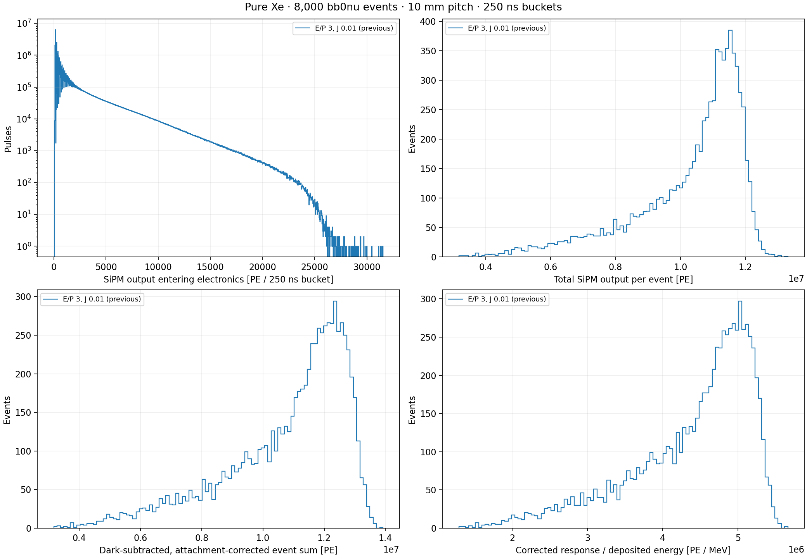
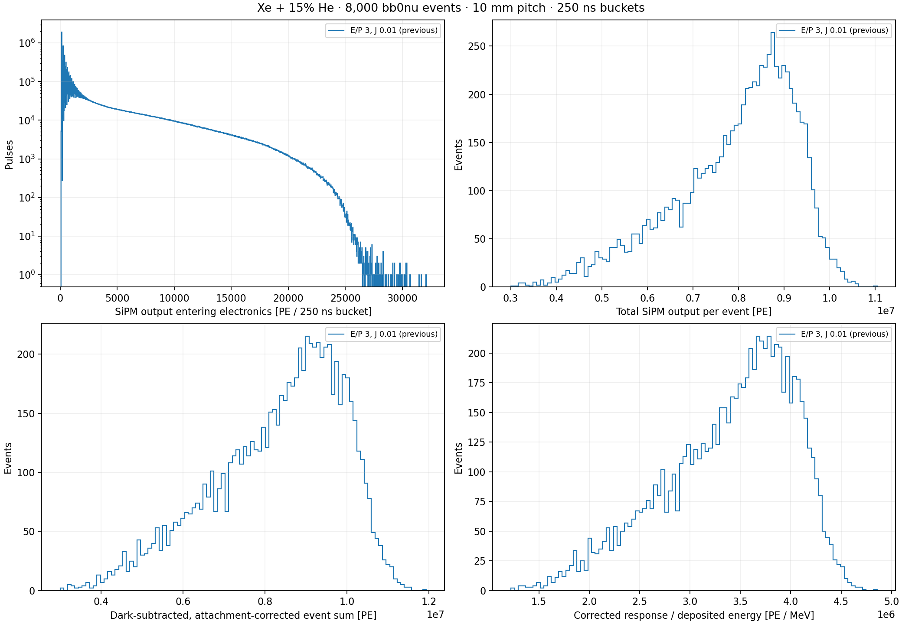

Completed productions shown: legacy. Awaiting completion: ep2p5, ep3. Pressure 15 bar; holes 5 mm in diameter and 5 mm deep; PDE 0.3; gain 2.55e+06; 7854 microcells; recovery time 73.4 ns. The signal injected into electronics is the SiPM avalanche charge divided by the fully recovered single-PE charge. It includes microcell recovery and dark avalanches, before the 0.5 PE electronic noise and 1 mA clipping. The inclusive pulse distribution uses photon-positive SiPM–bucket cells. Event sums use every acquired cell. Expected stationary dark charge is subtracted before multiplying by exp(drift time / 15 ms). The dark baseline uses the stationary dark-only recovery factor; illumination can further reduce dark avalanche charge. The corrected sum retains SiPM nonlinearity. The tabulated width is the RMS divided by the mean of the complete event distribution. The response per deposited MeV additionally removes variations in the simulated deposited energy. Gaussian-equivalent FWHM is 2.355 times RMS; the distribution may be non-Gaussian. Both gases use the user-specified Oliveira Figure 6 readings: J = 0.015 at E/P = 2.5 and J = 0.025 at 3. The previous E/P = 3, J = 0.01 production is retained as a reference.
PDF · Interactive viewer · Ion and electron overview
| Gas | E/P | J | Events | Mean pulse PE | Corrected RMS % | Equivalent FWHM % | PE/MeV equiv. FWHM % | Clipped pulses % | Output charge retained % |
|---|---|---|---|---|---|---|---|---|---|
| Pure Xe | 3.000 | 0.010 | 8000 | 1968.278 | 18.370 | 43.258 | 43.226 | 55.330 | 23.111 |
| Xe + 15% He | 3.000 | 0.010 | 8000 | 3552.795 | 18.896 | 44.497 | 44.467 | 65.568 | 13.854 |

